Caso 016 · Johan Celsing · 2013 · funerario (crematorio)
La familia llega a pie desde el oeste por un camino pavimentado de 1,80 m, cruza la explanada abierta entre cuatro árboles, entra por el vestíbulo, se despide en una sala que mira al bosque y puede salir a un patio de duelo. El féretro hace su propio recorrido por el nordeste, sin cruzarse con ella. Es un edificio de una sola planta, de 36 x 24 m más un ala técnica al este, que ocupa unos 1.000 m² (20 % del claro de 70 x 70 m) y deja el resto del claro libre de obra.
Lectura literal del boceto, orientado con el apartado 4 del encargo: el rectángulo grande es el edificio único, el claro rectangular es el patio, el rectángulo oscuro es el volumen de filtros y chimenea, el óvalo es la colina SE (intacta), los cuatro círculos son los árboles de la explanada, el camino con puntos es el ramal O de las familias y el zigzag es el bosque. Se compararon un bloque compacto (P1) y tres pabellones con galerías (P2). P1 ocupa una sola huella (menos cimentación entre raíces, S/V bajo con -3 a 0 °C, nieve sobre una cubierta simple) y un circuito corto sala-cremación. P2 triplica las envolventes y cruza los flujos. Se elige P1 y se recoge de P2 la apertura de las salas al bosque con paños grandes.
Oeste: sala pequeña (90 m², 40 plazas), sala de familiares (60 m²) y despacho de atención (60 m²). Centro: vestíbulo en L (162 m²), tres aseos (accesible de 4 x 4 m con círculo de 1,50 m, más dos), limpieza y almacén (50 m²), sala grande de 12 x 12 m (144 m², 128 plazas, dos salidas) y patio de duelo (100 m²). Este: pasillo de féretros, recepción (96 m²), cámara fría (36 m²), sala de cremación (120 m², 2 hornos), filtros e instalaciones (48 m²), basuras y almacén (24 m²), vestuarios con ducha y aseo del personal y descanso y oficina. Superficie útil interior 990 m²; exterior 1.144 m² (explanada 552 m², patio de servicio, aparcamiento y parada).
| Exigido | Propuesto | Cumple |
|---|---|---|
| Situación y emplazamiento | U01, U02 | sí |
| Plantas, secciones, alzados, detalles | P01-P02, S01-S02, S03-S05, D01 | sí |
| Ceremonia para grupos distintos | sala pequeña 40 + sala grande 128 + patio de duelo | sí |
| Vestíbulo y espera | 162 m² + explanada 552 m² | sí |
| Familiares y administración | 60 + 60 m² | sí |
| Aseos públicos accesibles | accesible 4x4 m + 2 | sí |
| Féretros y vehículos, acceso separado | recepción 96 m², muelle, camino NE | sí |
| Cremación y zona técnica | 120 + 48 + 24 m², chimenea, cámara fría | sí |
| Personal | vestuarios con ducha, descanso y oficina | sí |
| Exteriores | explanada, parada, aparcamiento 10 plazas (1 accesible) | sí |
| Superficie (tipología 2 hornos: 700-1.200 m²) | 990 m² útiles | sí |
| 1-2 plantas, 9 m | 1 planta, cubierta 4,0-6,5 m | sí; chimenea 10 m: desviación, elemento técnico por emisiones |
| Mínima afección al arbolado | sin talar; plataforma a +0,30 | sí |
Muros de carga de madera contralaminada en la zona pública y de ladrillo (resistencia al fuego) en la zona de cremación, en las líneas de los ejes x = 14, 24, 36, 48, 60 e y = 34, 46 (luces 10-12 m en x, 12 m en y). Sin pilares. Cubierta de paneles contralaminados de 20 cm sobre vigas de madera laminada de 16 x 60 cm cada 3 m (luz 12 m, L/20) para nieve de 1,5 kN/m² más 1,0 de cubierta. Cimentación: zapata corrida de 0,60 x 0,40 m bajo cada muro, solera de hormigón de 15 cm sobre grava ventilada, excavación máxima 0,5 m y radio de 6 m al tronco de cada árbol. Sin juntas de dilatación: el edificio mide 46 m, los cuerpos de madera y de ladrillo son independientes (los separa el muro x = 48, que no se traba) y la junta alzada del zinc absorbe los movimientos de la cubierta.
| Elemento | Material | Acabado |
|---|---|---|
| Muros exteriores y de carga, zona pública | madera contralaminada | alerce |
| Muros de cremación y filtros | ladrillo | ladrillo visto |
| Tabiques interiores | yeso | enlucido |
| Muro del patio de duelo | piedra, 1,10 m | piedra |
| Solera | hormigón | baldosa o losa; tarima en salas |
| Cubierta | chapa de zinc de junta alzada, 5 % | zinc |
| Chimenea | metal | acero inoxidable |
Agua de red por el camino NE; saneamiento a fosa y pozo filtrante dentro del claro, lejos de raíces. Pluviales: la cubierta vierte al lado norte y a una cuneta de grava que infiltra; sin recogida mecánica. Electricidad por el camino NE a un cuadro en filtros e instalaciones. Ventilación natural cruzada en salas (huecos S y N); mecánica con recuperación de calor en aseos y cremación. Evacuación de humos de los hornos por filtros (48 m²) y una chimenea de 10 m (x 53, y 36). Patinillo de instalaciones de 3,0 x 0,85 m (x 31-34, y 50,15-51,0) en el trasdós norte de los aseos, dentro de Limpieza y almacén, dibujado y rotulado en P01. La fosa (3 x 2,5 m, x 32-35, y 60-62,5), el pozo filtrante (x 38-41) y la cuneta de grava de 30 m (y 56,5-57,7) están dibujados en P01 y U02; la fosa y el pozo quedan a más de 6 m de cualquier tronco.
Muro: tablero de alerce de 22 mm, cámara ventilada de 50 mm, lana mineral de 120 mm, panel contralaminado de 100 mm y trasdosado de yeso. Cubierta: zinc de junta alzada, tablero y cámara ventilada, aislante de 180 mm, barrera de vapor y forjado de madera contralaminada. Solera: pavimento, hormigón de 15 cm, aislante de 10 cm y grava de 20 cm.
Dfb con nieve: compacidad, cubierta simple de un faldón con vertido al lado norte, aislamiento de 120-180 mm. Huecos grandes al S y E para el sol bajo de invierno (alero de 1,5 m contra el sol alto de verano); muro ciego al SO en la zona de servicio frente al viento dominante. La sala grande tiene ventanales altos (dintel a 4,2 m) hacia el bosque.
Itinerario plano y accesible de 1,80 m, con desnivel de 5 cm absorbido en el umbral, desde la parada y la plaza accesible hasta el vestíbulo. No hay escaleras, ascensor ni rampa. Puertas de 0,90 a 2,00 m. La sala grande (128 plazas) tiene dos salidas (vestíbulo y patio); la sala pequeña, una puerta doble de 1,60 m al vestíbulo y otra al exterior. Calle de maniobra de 5 m para vehículos de servicio.
Comprobación lógica: 0 errores, 0 avisos. Los avisos de ocupación de lámina (< 60 %) de P01, secciones, alzados y U02 se deben a que el claro de 70 x 70 m con el bosque no baja de A1 a 1:200 y a la baja relación alto-ancho del edificio de una planta. Las dos secciones no cortan ninguna escalera porque no la hay.
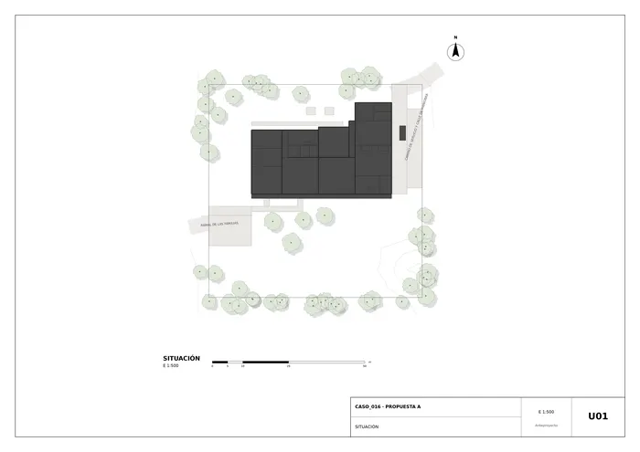
U01 · Situación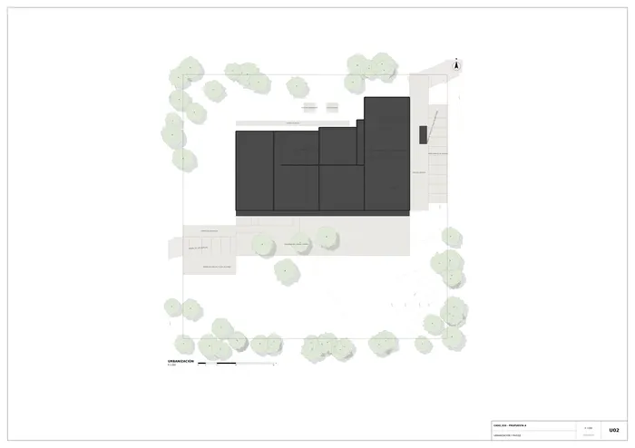
U02 · Urbanización y paisaje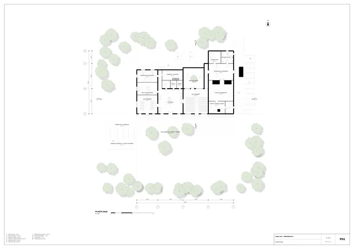
P01 · Planta baja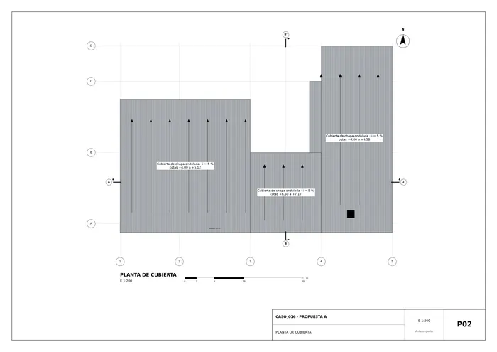
P02 · Planta de cubierta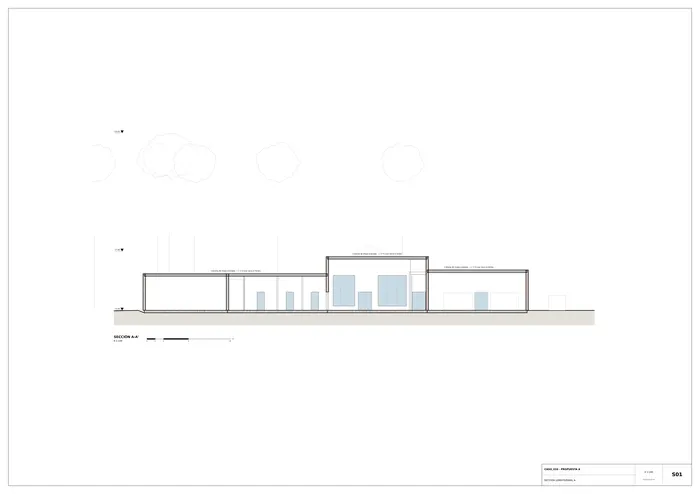
S01 · Sección longitudinal A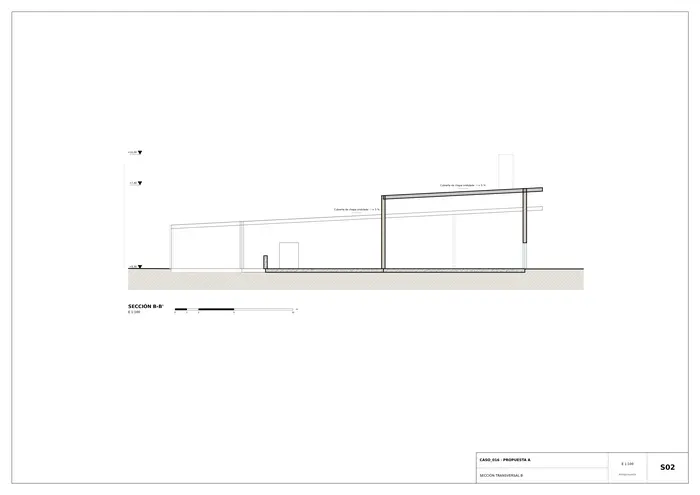
S02 · Sección transversal B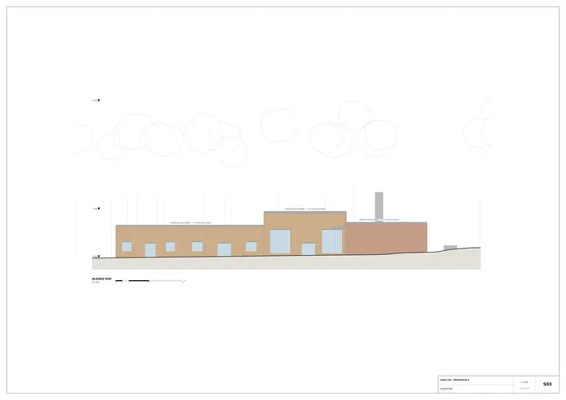
S03 · Alzado sur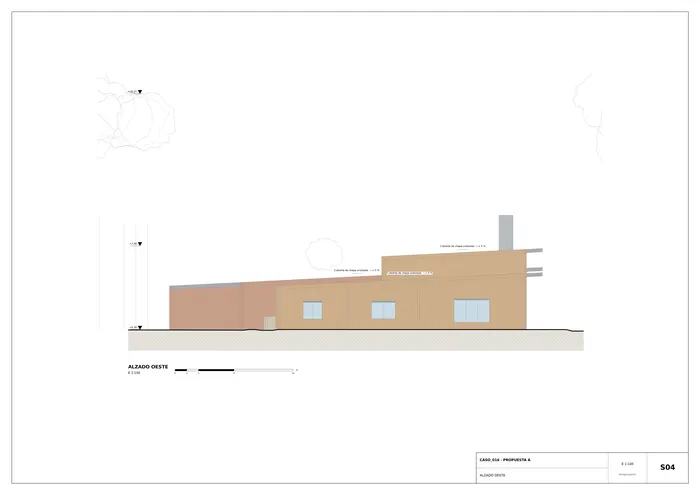
S04 · Alzado oeste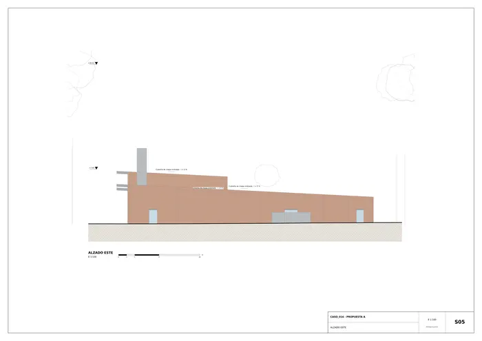
S05 · Alzado este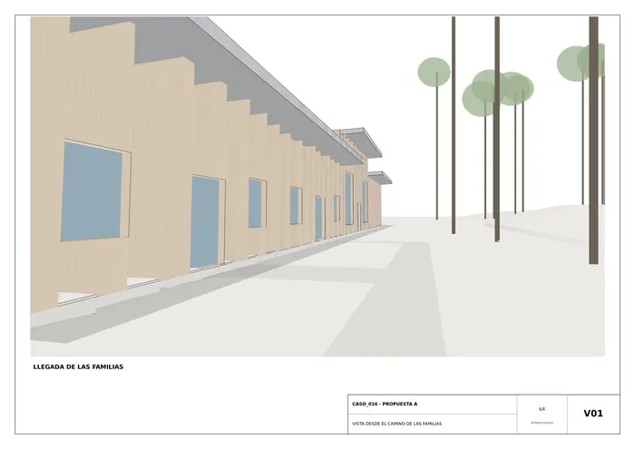
V01 · Vista desde el camino de las familias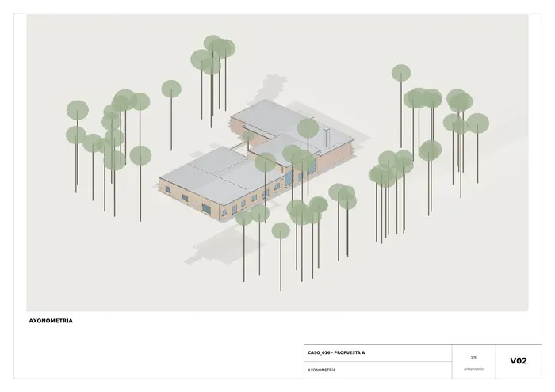
V02 · Axonometría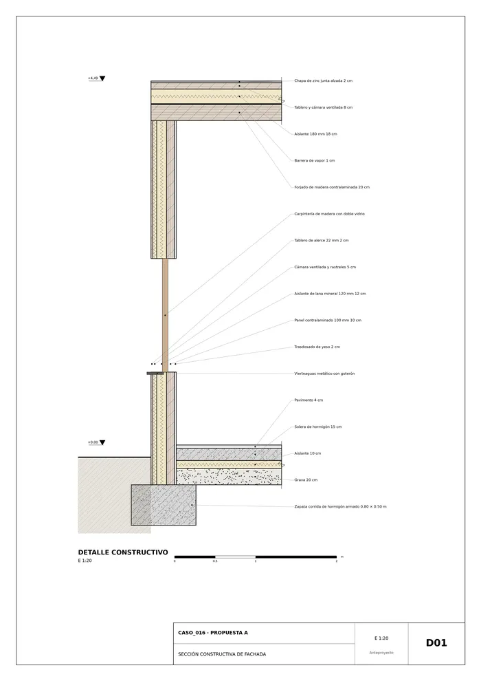
D01 · Sección constructiva de fachadaMemoria de la propuesta tal como la entregó el sistema. Se han omitido las notas internas del proceso (revisiones, control de reconocimiento y referencias a archivos de trabajo).